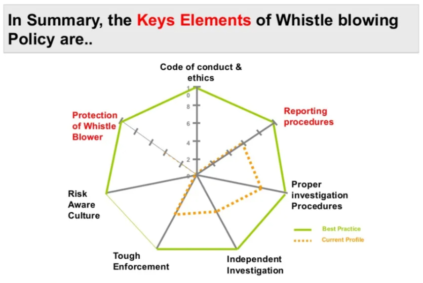

Jeewantha Lahiru
Game Developer
Ethical Whistleblowing
Whistle blowing is revealing secretive information or activity within a private or public organization that is considered as illegal, unethical, or not correct. The information that is said to be wrong, can be classified in many ways. Those are, violating of company policy/rules, law, regulations, or threat to public interest/national security, as well as fraud, and corruption.
Those who become whistleblowers can choose to bring information or allegations to surface either internally or externally. Internally, a whistleblower can bring his/her accusations to the attention of other people within the accused organization such as an immediate supervisor. Externally, a whistleblower can bring allegations to light by contacting a third party outside of an accused organization such as the media, government, law enforcement, or those who are concerned. Whistleblowers, however, take the risk of facing stiff reprisal and retaliation from those who are accused or alleged of wrongdoing.
The key elements of whisle blowing
- Set and map the ways by which employees can make their concerns known about suspected fraud or corruption.
- Outlines how the organization will deal with such instances.
- Ensure independent & Confidential investigation proceedings.
- Need to protect those people who raise concerns.
- Zero tolerance to fraud and corruption with tough enforcement on policy.
- It also should be linked to commitment to the development of a culture of honesty
- Develop a clear code of code of conducts & Ethics.

Steps for a Whisleblowing
- Get Evidence
This is the most important step in your whistleblower claim. It's crucial that you get documentary evidence of the fraud. Such evidence can include emails, internal studies, billing records, or test results. If you can witness the wrongdoing first hand that's great, but not necessary. This evidence will help support your claim when you present it to the government. The more evidence you have, the better chances your case will be. - Presenting the Evidence
Under the False Claims Act, the whistleblower must file a complaint in court as well as submit it to the government, along with a Disclosure Statement that details the alleged misconduct. However, before filing the claim, we will set up a meeting with the appropriate government agency to discuss the claim. This is when you have to show the government that you have enough evidence of the fraud to support your claim. - Government Investigation
Now comes the longest part of the claims process — the government's investigation. During this time, all aspects of the matter, including the whistleblower's identity and the investigation itself, will remain confidential. Any formal complaints filed in court are kept under seal so even the defendants don't know what's going on. During this time, you may be interviewed by the government, along with any other witnesses involved or knows of the fraud.
The complaint will remain under seal for 60 days unless the government asks for an extension, which it usually does. If criminal violations are involved in the claim, the FBI may be involved in the case. The whistleblower must be accessible and cooperative to help the government with the case. - The Decision
If the government decides to bring a case, the whistleblower may be asked to testify at trial or a grand jury proceeding. It's at this point your identity will be disclosed. Roughly 90 percent of False Claims Acts cases the government intervenes in tend to be successful. But if the government declines to intervene, these whistleblower cases are less than successful. Without the government's support, the pursuit of the cases can be expensive and lengthy. Also, you may be prepared for retaliation from your employer. Although it is illegal for a company or organization to retaliate against a whistleblower, it still happens.
If we want users to like our software, we should design it to behave like a likeable person.